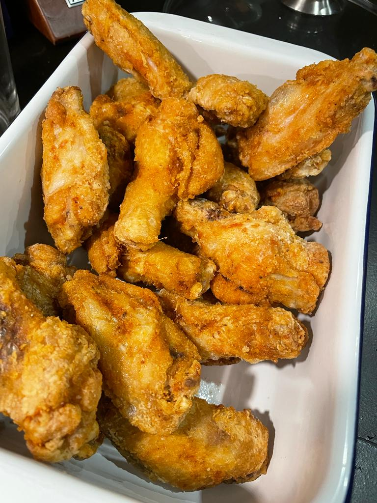

Dankest buffalo wings

Story
Okay, so this is my favorite recipe. It's perfect for nights when you want to watch a match or UFC or just wanna have a ber with friends. I cook this a lot because everyone loves this shit. (The wings in the picture are not yet coated in sauce, I couldn't find a picture like that unfortunately.
Ingredients
For the buffalo sauce
- 1 small bottle of Frank's Red Hot sauce
- 125 g unsalted butter
- Pinch of MSG (optional)
For the wings
- 1 kg chicken wings
- Corn flour
- Big pinch(es) of salt
- Pepper to taste
- 2 tsp cayenne pepper
- 2 tsp garlic powder
Preparation
- Minimum a couple hours, but ideally 24 hours before eating get the chicken and season it generously with salt, pepper, a bit of cayenne and garlic powder. Put them on a tray and put it in the fridge uncovered! This is important, as they need to dry out as much as possible,
- Now the sauce. Gently melt the butter in a pan, then add the whole bottle of hot sauce and a pinch of MSG. Whisk it until it's homogenous then put it away.
- Heat a lot of oil in a big pot up to 350 Fahrenheit or till it sizzles when you put a wooden spoon in it.
- Pour some corn flour on a plate or in a bowl and start coating the chickies. After coating bang the chickies to your hands and shake off the excess corn flour.
- Fry the wings in the hot oil for about 10 minutes or until they're golden brown. Don't overcrowd the vessel please.
- After frying, put the chickies in a bowl and pour the buffalo sauce on them. Toss it a couple times until each wing is evenly coated.
- Serve with garlic sauce or blue cheese sauce or nothing! I don't care! Enjoy!